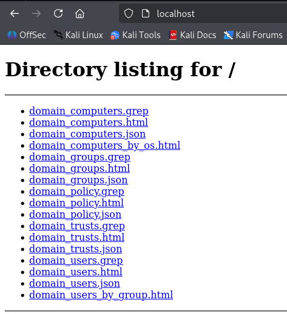
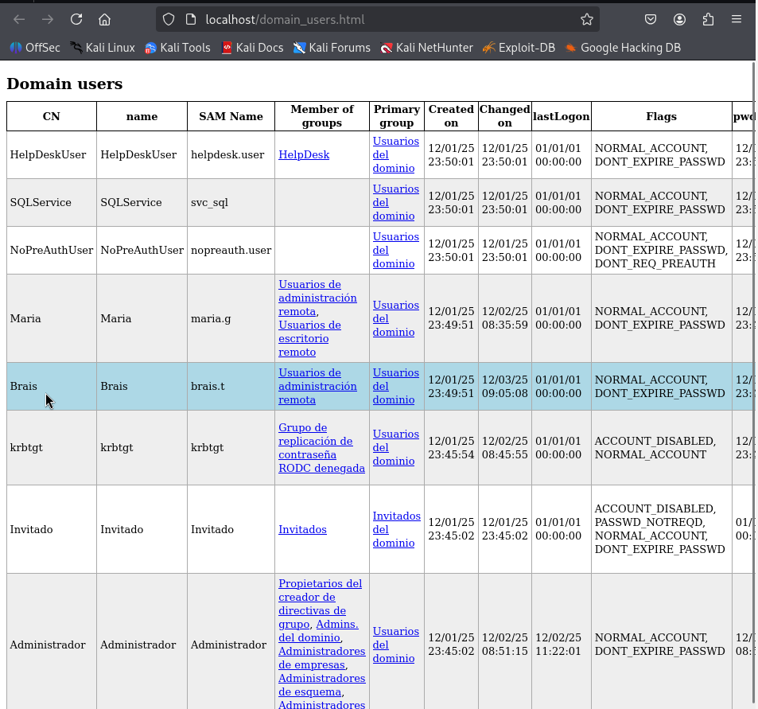
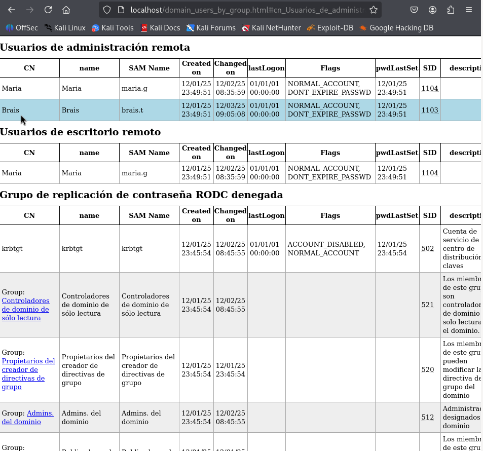
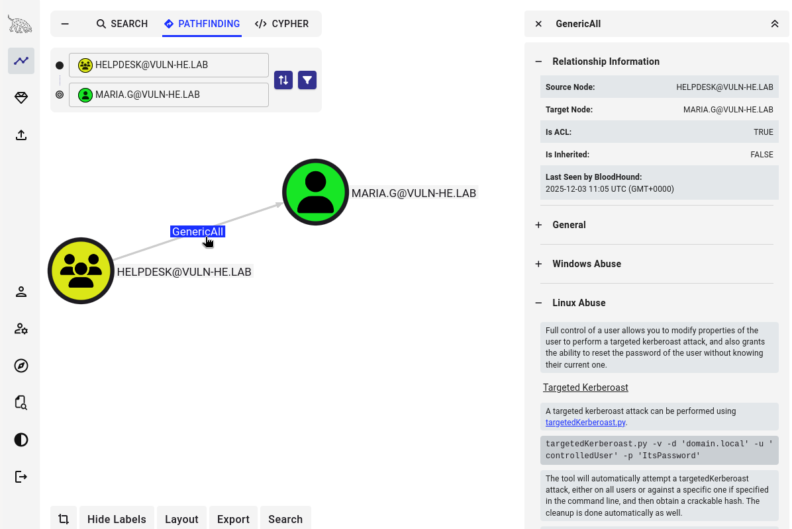
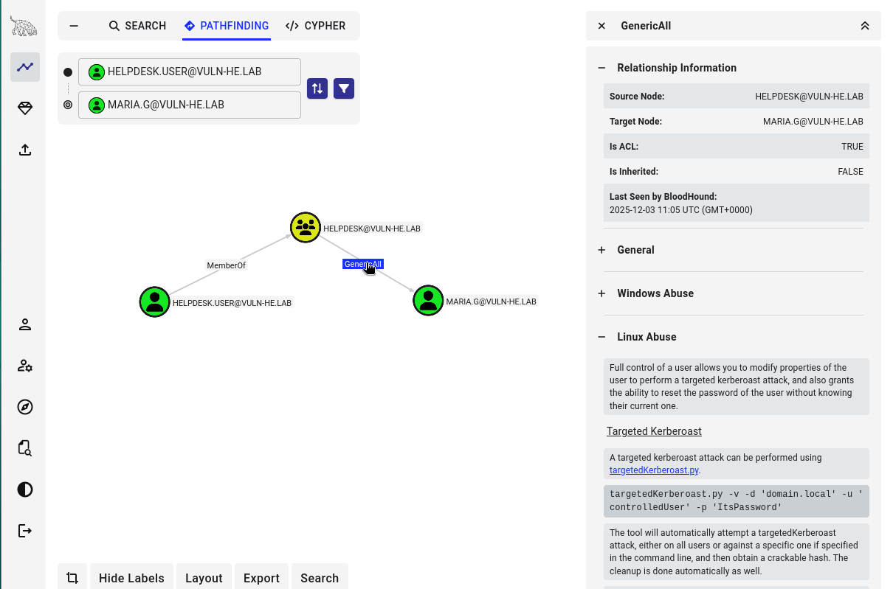
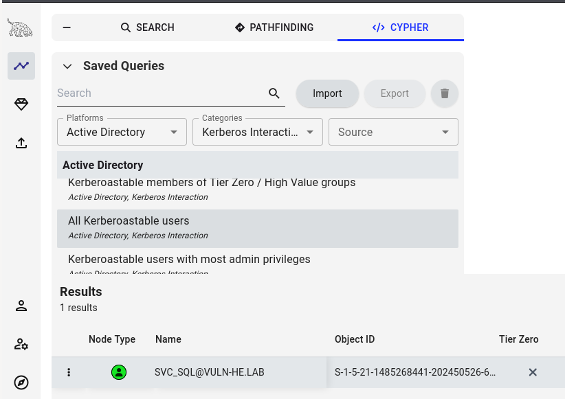

Técnica de Análise: Enumeración Avanzada de AD (LDAP e BloodHound)
Fase: 2. Análise / 4. Post-Explotación
Requisitos: Credenciais válidas de usuario do dominio (ex: brais.t).
Obxectivo: Mapear a estrutura completa do Active Directory (Usuarios, Grupos, ACLs, Sesións) para identificar rutas de ataque complexas.
Importancia desta fase
Aínda que ferramentas como nmap ou enum4linux dan información básica, ferramentas baseadas en LDAP e a teoría de grafos (BloodHound) son as que revelan as "xoias da coroa": relacións de confianza ocultas, permisos abusivos (ACLs) e privilexios especiais.
1. Enumeración Rápida con ldapdomaindump
Esta ferramenta permite extraer toda a información do dominio vía LDAP e exportala a un formato HTML fácil de ler. É moi útil para ter unha "foto fixa" rápida de usuarios, grupos e computadores.
Execución dende Kali:
-
Crear un directorio para organizar os resultados.
-
Executar a ferramenta coas credenciais obtidas (ex:
brais.t).
-
Levantar un servidor web para visualizar os informes HTML xerados.
-
Acceder a
http://localhostno navegador para ver listaxes de usuarios, grupos de administradores, e computadores do dominio.*



2. Enumeración Profunda con BloodHound
tip SharpHound-BloodHound
Revisar o comentado en Sharphound-BloodHound
BloodHound utiliza a teoría de grafos para revelar as relacións ocultas nun entorno Active Directory. Necesita dúas partes: o Ingestor/Colector (para obter os datos) e o Visualizador (para analizalos).
Opción A: SharpHound (Recomendada)
Execútase directamente na máquina vítima (Windows). Adoita obter máis información (como sesións locais) que a versión de Python.
Requisitos: Acceso WinRM con brais.t.
-
Descargar: Obtén o zip de SharpHound na túa máquina Kali.
-
Descomprimir: Obtén o binario
-
Subir: Carga o executables á máquina vítima mediante Evil-WinRM.
-
Executar: Lanza o colector para recompilar todos os datos.
Isto xerará un ficheiro
.zip(ex:20251201123456_BloodHound.zip). -
Exfiltración: Descarga o ficheiro ZIP á túa máquina.
Opción B: BloodHound Python (Alternativa)
Execútase dende a túa máquina Kali, conectando remotamente. Útil se non podes subir binarios á vítima, aínda que pode xerar máis ruído de rede ou obter menos datos de sesións.
$ mkdir json && cd json
$ bloodhound-python -c All -u 'brais.t' -p 'iloveyou' -ns 192.168.56.100 -d VULN-HE.LAB
.json no teu directorio actual.
3. Análise de Rutas de Ataque
tip SharpHound-BloodHound
Revisar o comentado en Sharphound-BloodHound:
- Sección 4. Instalación e configuración de BloodHound
- Sección 5. Importación de datos en BloodHound (Lembrar esperar, 1-2 minutos, a que se procesen os datos)
Unha vez teñas os datos (ZIP ou JSONs), impórtaos na interface gráfica de BloodHound na túa máquina Kali (bloodhound).
Consultas Clave para este Laboratorio
Usa a barra de busca ou as consultas predefinidas para atopar as vulnerabilidades intencionadas deste laboratorio:
A. Detectar SeBackupPrivilege
- Busca o nodo do usuario BRAIS.T.
- Mira os seus Privilexios Locais ou relacións de saída.
Aviso: A Cegueira de BloodHound
É moi probable que BloodHound NON mostre a liña SeBackupPrivilege nin CanBackup para o usuario brais.t.
Por que?
Neste laboratorio, o privilexio asignouse editando directamente a política local (SeBackupPrivilege = SID_BRAIS) e non engadindo ao usuario ao grupo "Backup Operators". BloodHound é excelente mapeando grupos de AD, pero ás veces falla ao interpretar asignacións directas de dereitos locais (LSA) se non se fai unha recolección con privilexios administrativos moi específicos.
A Lección:
Non confíes cegamente no grafo se non atopas un camiño. A "verdade absoluta" está na terminal.
1. Consegue acceso co usuario.
2. Executa whoami /priv.
3. Se ves o privilexio aí, tes o poder, digan o que digan as ferramentas de enumeración remota.
O vector de ataque confírmase no documento: ATAQUE_ESPECIFICO_SEBACKUP
B. Detectar SeImpersonatePrivilege
- Busca o nodo do usuario MARIA.G.
- Revisa as propiedades do nodo ou relacións de privilexios.
Aviso: A Cegueira de BloodHound (Impersonate)
Do mesmo xeito que con Brais, o privilexio SeImpersonatePrivilege de maria.g foi asignado vía política local e non por grupo. BloodHound non mostrará este camiño de ataque por defecto.
De novo, a comprobación manual é obrigatoria:
Se apareceSeImpersonatePrivilege, o sistema é vulnerable a ataques tipo Potato.
O vector de ataque confírmase no documento: ATAQUE_ESPECIFICO_SEIMPERSONATE
C. Detectar Abuso de ACLs
- Busca o nodo do grupo HELPDESK.
- Busca o nodo do usuario MARIA.G.
- Verás unha liña etiquetada como GenericAll.

Tamén se podería detectar dende o nodo de usuario HELPDESK.USER

- Isto confirma o vector de ataque descrito en: ATAQUE_ESPECIFICO_ACLS_HELPDESK
D. Detectar Kerberoasting
- Usa a consulta predefinida "All Kerberoastable Accounts" en: Explore → CYPHER → Saved Queries → Active Directory → Kerberos Interaction
- Aparecerá o usuario SVC_SQL.
